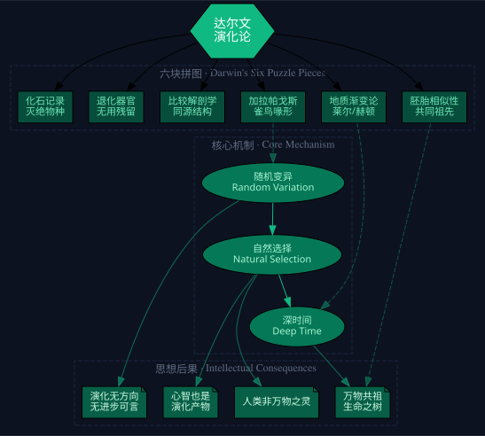

一个本该做牧师的英国绅士，在加拉帕戈斯的雀鸟嘴里看到了生命最残酷的真相
他用"自然选择"这把手术刀，切断了人类与神之间的脐带
1831年12月27日，22岁的查尔斯·达尔文登上了贝格尔号。他不是以博物学家的身份上船的——那个职位已经有人了。他是以"绅士旅伴"的身份，陪船长吃饭聊天的。船长的顾虑很实际：在茫茫大海上，一个孤独的船长如果疯了，整条船就完了。他需要一个同等阶级的人说话。于是达尔文去了。五年后他回来时，脑子里装的不是标本目录，而是一颗定时炸弹。
这颗炸弹花了23年才引爆。这期间达尔文做了什么？他结了婚，生了十个孩子（六个活到成年），买了一座乡间庄园，然后再也没有离开过。从30岁起，他成了一个重度慢性病人——很可能是南美旅行中染上的恰加斯病。所有人都觉得他活不了多久了。而他以这种半残废状态又活了43年。这43年里，他就在那座庄园里，日复一日地积累证据、修改手稿、给全世界的博物学家写信。他知道自己在写什么——一部会摧毁《创世记》的书。
达尔文的思维方法是我评价最高的一种——演化思维。这不是"适者生存"那么简单的口号，而是一种理解复杂系统的底层算法：随机变异产生多样性，环境选择淘汰不适者，时间放大微小的差异。这套算法不仅解释生命，也解释语言、技术、文化、经济——任何存在变异、选择和传承的系统。而达尔文是怎么想出这套算法的？他手里只有六块不完整的拼图，没有一块是铁证。但他把六块拼图同时放在了脑子里，看到了它们共同指向的那个模式。
点击翻转
所有变异都是随机的。没有"为了适应环境而变异"这回事。基因在复制中出错，大多数错是坏的，极少数碰巧有用。演化没有目的论。
点击翻转
"适者生存"是斯宾塞的词，达尔文勉强接受。真正的意思是：能活到繁殖的个体，把基因传下去了。仅此而已。不涉及进步、优劣、高低。
点击翻转
达尔文从莱尔的地质学中学到了一个关键洞见：微小的变化，加上足够长的时间，可以产生任何结果。地球远不止6000年——它有几百万、几亿年。
点击翻转
所有物种来自共同的祖先。蝙蝠的翅膀、鲸的鳍、人的手——外观完全不同，内部骨骼结构一模一样。不是分别创造，而是从一个模板改造而成。
点击翻转
演化不是从低到高的阶梯。今天适应环境的物种，明天环境一变就可能灭绝。人类不是演化的"终点"，我们只是生命之树上的一个分叉。
点击翻转
鲸的骨盆骨、蛇的腿骨残余、盲洞螈的眼睛——如果上帝是完美的，为什么要留这些废物？但如果是演化留下的遗产，就完全说得通了。
点击翻转
鸟、爬行动物、哺乳动物的早期胚胎几乎一模一样。达尔文在南半球看到新物种也有同样的模式——这强烈暗示着一个共同的设计起点。
点击翻转
巨齿、数吨重的骨架——这些生物已经不存在了。传统解释是"大洪水之前"。达尔文用粗略的盐度测年法推断出：地球远不止几千年。
点击翻转
艺术、音乐、语言——不是神的恩赐，而是大脑演化的副产品。达尔文认为音乐是语言的前身。我们的审美快感来自生存奖励系统的劫持。
达尔文手里没有一块铁证。雀鸟喙形、地质渐变、胚胎相似、同源结构、退化器官、化石记录——每一块单独看都有其他解释。但他把六块同时放在脑子里，看到了它们共同指向的唯一模式。这种"跨证据域模式识别"是最高级的认知能力。
从贝格尔号归来到《物种起源》出版，达尔文等了23年。不是拖延——是积累。他知道这个结论有多大的颠覆性，所以他不断地搜集证据、预判反驳、完善论证。直到华莱士寄来独立发现的论文，他才被迫出手。
任何存在以下三个条件的系统都会发生演化：(1) 个体之间存在可遗传的变异；(2) 环境对变异进行筛选；(3) 时间足够长。这套框架不仅解释生物，也可以用于理解语言演化、技术演化、组织演化——任何复杂自适应系统。
这是演化思维中最难接受的一点：演化没有目的。人类不是"演化得更高级"的产物——我们只是恰好适应了当前环境的无数物种之一。环境一旦剧变，我们的"高级"特征可能瞬间变成致命的弱点。这不是悲观，这是对复杂系统的诚实。

同一个祖先的雀鸟，在不同岛屿上演化出完全不同的喙形。咫尺之遥，天地之别。
山脉不是上帝造的——是日复一日的侵蚀和抬升。今天的平凡过程，加上时间，就是创造一切的力量。
鸟、蜥蜴、人的胚胎在早期几乎一样。发育的路线图上写着共同的起点。
同样的骨骼，改造成了翅膀、鳍、爪子、手。不是分别设计——是同一份图纸的变体。
鲸有骨盆，蛇有腿骨残迹。完美设计的上帝，怎么会留下废品？
巨大的骨架埋在地下，不属于任何现存物种。它们来过，然后消失了。
关键不在于任何一块拼图。达尔文的六块拼图中，没有一块是铁证。雀鸟喙形可以解释为上帝的创造趣味；地质渐变可以与圣经洪水兼容；胚胎相似当时是流行但错误的理论。
达尔文之所以是达尔文，是因为他同时拿着这六块拼图，看到了它们共同指向的模式。而他的同时代人只能看到一两块——所以他们看不到演化。
这是最高级的认知能力：跨证据域的模式识别。
现代进化论已经远远超出了《物种起源》。遗传学、分子生物学、基因组学的发展，让今天的理论比达尔文的版本精确了上百倍。达尔文本人如果复活，会第一个纠正自己的错误。
阿尔弗雷德·华莱士在东南亚独立得出了几乎相同的自然选择理论。他的论文寄到达尔文手里时，达尔文慌了——23年的积累眼看要被别人抢先。两人最终在1858年联合发表。
艾玛·达尔文是虔诚的基督徒。她知道丈夫的书会摧毁她的信仰。但她仍然帮他做了全书的语言编辑。她在日记里写："如果我必须在上帝和达尔文之间选择，我毫不犹豫选择达尔文。"
《物种起源》原稿1300多页。出版商要求砍到400-500页。达尔文删掉了最具宗教争议的两部分：生命起源和人类演化。这就是"缺失环节"批评的来源——不是缺证据，是被编辑删了。
主教威尔伯福斯当众嘲讽赫胥黎："你是通过祖父还是祖母那边从猴子传下来的？"赫胥黎回答："我宁愿选择一只猿猴做祖先，也不愿选择一个利用自己的地位来扼杀科学讨论的人。"
达尔文本应被封为爵士。教会直接干预，连阿尔伯特亲王的支持都不管用。他最后躺在了威斯敏斯特教堂的中殿地板上——和牛顿做邻居，虽然只有一块白石板。
丹麦科学家用计算机模拟眼睛从平面感光细胞到鱼眼复杂程度的进化——只需36万年。在地质时间尺度上，这几乎是一瞬间。眼睛在生命史上至少独立进化了40次。
大约240万年前，一个基因突变让人类祖先的咬肌变弱了。这看起来是坏消息——但松弛的下颚释放了颅骨的生长空间，让大脑从400毫升膨胀到1200毫升。今天的"弱者"可能是明天的赢家。
从优生学到纳粹，都打着达尔文的旗号。但演化没有告诉我们应该怎么生活——它只描述了发生过什么。人类用文化和技术代替了被动选择。把"适者生存"用于人类社会是范畴错误。
人类不是从黑猩猩"进化"来的——我们和黑猩猩共享一个550万年前的祖先。那个祖先可能分化成了六七种，每一种又分化成了六七种。化石不是一根链条上的环节，而是一棵巨大灌木上不同分枝的断片。